Project · Universe sandbox
Astrarium
A universe sandbox built on real astronomical data. Fly from the edge of the observable universe down to a single planet, then experiment with the laws that shape it.
Free · runs in your browser, on phones, or as a Windows app · no account needed
What it is
Explore the real universe, then play with it
Planetarium programs show the sky accurately but don't let you change it. Space sandboxes let you smash planets together but are loose about what's real. Astrarium does both. Planets, stars, nebulae, pulsars, black holes and galaxies sit where astronomers have measured them, and a physics simulation lets you push them, break them and rewind.
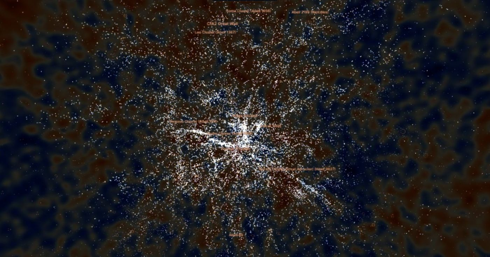
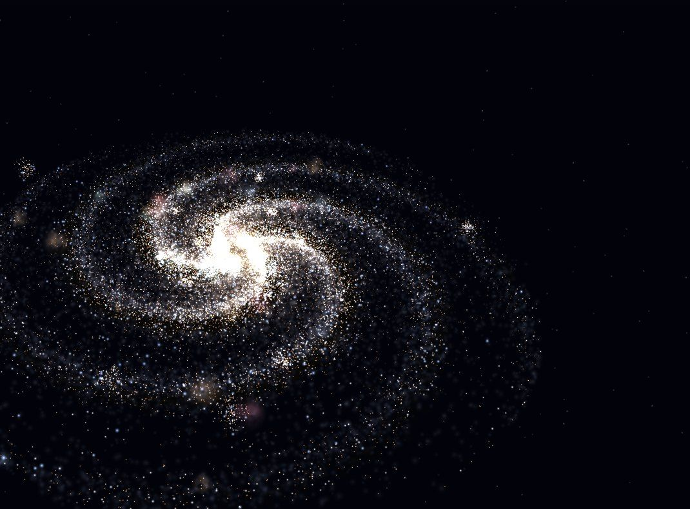
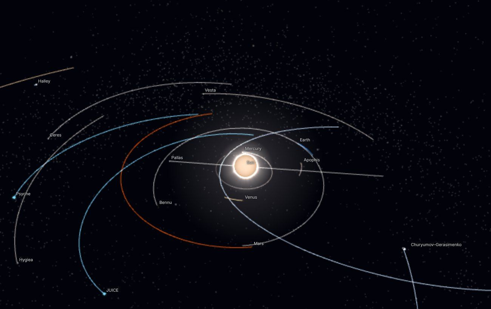
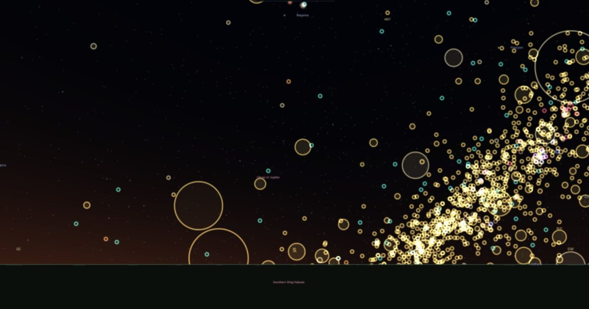
Try it here
The live app, on this page
Drag to turn the view, scroll or pinch to zoom, and click a planet to follow it. The full app has many more controls; open it in its own tab for the best experience.
It loads about 20 MB of real data, so it starts on a click rather than straight away.
What you can do
Visit real places. Break things. Learn why.
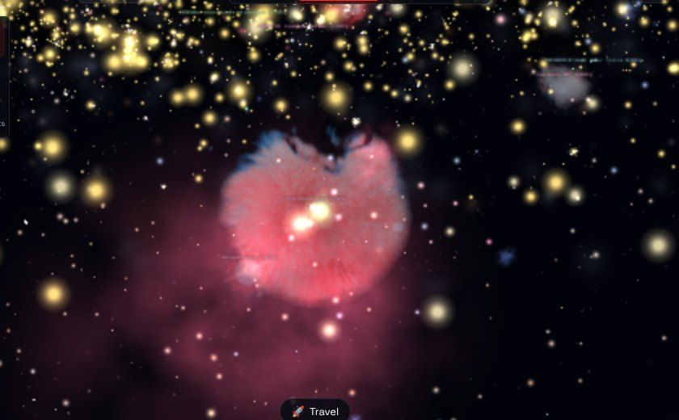
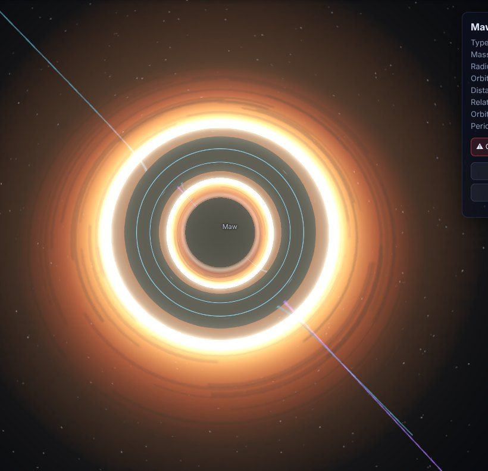
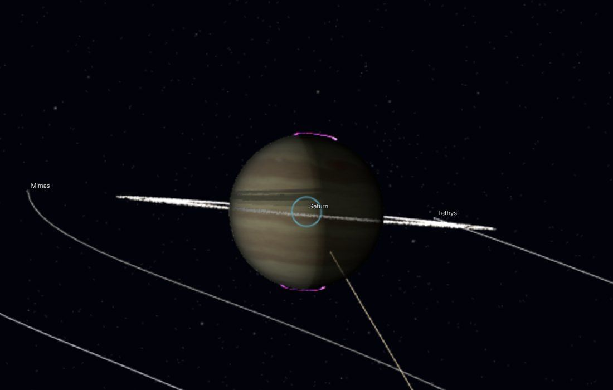
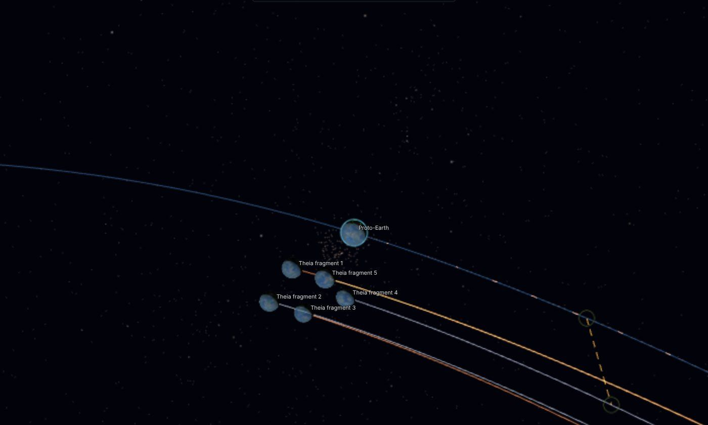
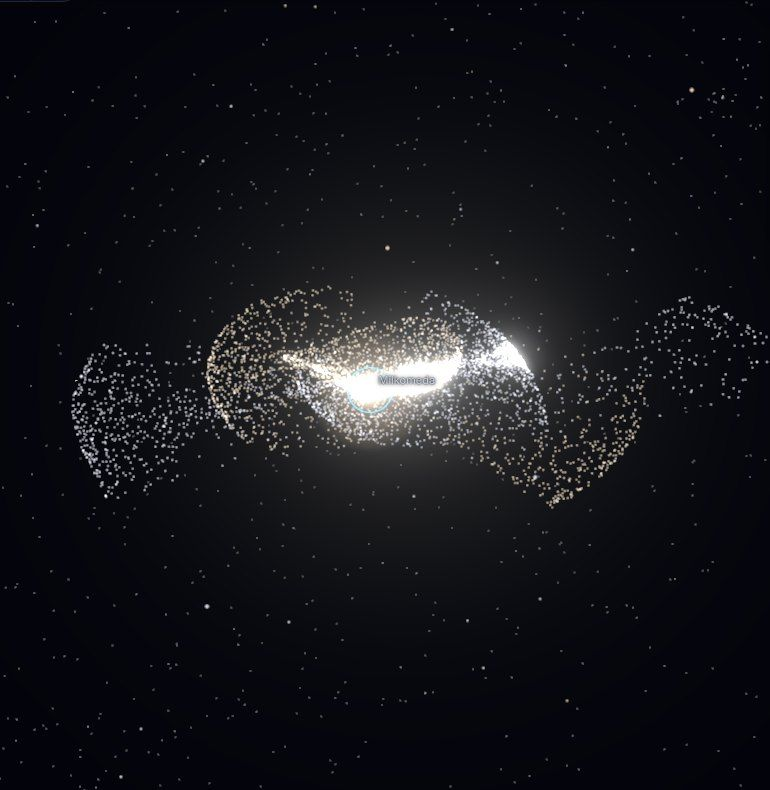
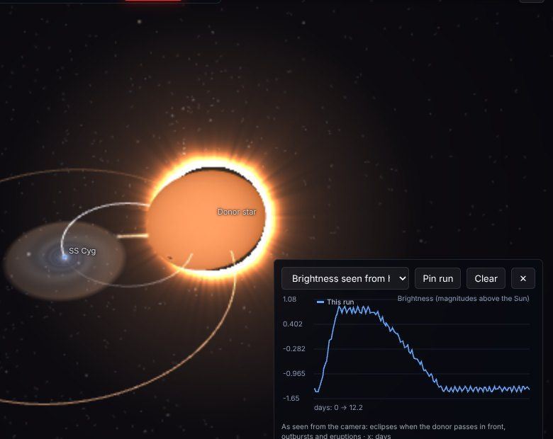
- Watch the asteroid Apophis pass inside the ring of satellites on 13 April 2029.
- Ride with Voyager past Jupiter, Saturn, Uranus and Neptune.
- Land on Mars and watch a butterscotch sunset; stand on the Moon under a black sky.
- Hear a pulsar spin, and the chirp of two black holes merging.
- Set off supernovae and see how a star's mass and metals decide its fate.
- Visit any of 4,847 exoplanet systems, such as TRAPPIST-1.
- Travel to Alpha Centauri at 99% of light speed and watch the sky turn blue ahead.
- Stand in the path of a total solar eclipse from 2024 to 2035.
- Take lessons with live graphs, play challenges, and write code in the console.
- Share any scene as a link, or describe one in a sentence and let Claude build it.
Who it's for
For classrooms, stargazers and the curious
See why orbits are ellipses and why stars die differently. Change a value and watch what happens instead of memorising it.
Show a phenomenon in seconds on the classroom screen, then send students a link that opens the same scene on their phones.
Plan with the Sky view and the eclipse paths, then visit the clusters and nebulae you see through the telescope at their real distances.
Fly an audience from Earth to the cosmic web with real data on screen, and save high-resolution pictures with photo mode.
Build systems, wreck them, fly spaceships, and play together in multiplayer rooms.
Script your own force laws, and read the public code and data scripts behind every number.
Real data, honestly shown
Measured where it can be, and clear about the rest
Astrarium takes everything it can from measurements: NASA/JPL, ESA's Gaia satellite, the NASA Exoplanet Archive, gravitational-wave observatories and professional catalogues. Where nothing has been measured, it uses a typical value and says so on screen. Automated tests check it against reality: planet positions agree with JPL within 0.01 AU, the Moon within half an arcminute, and eclipse times with NASA's catalogue within a second.
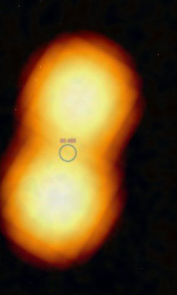
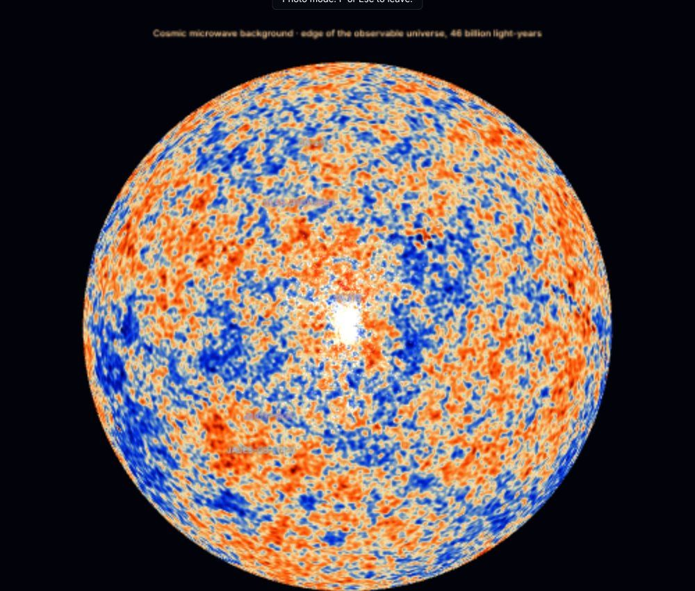
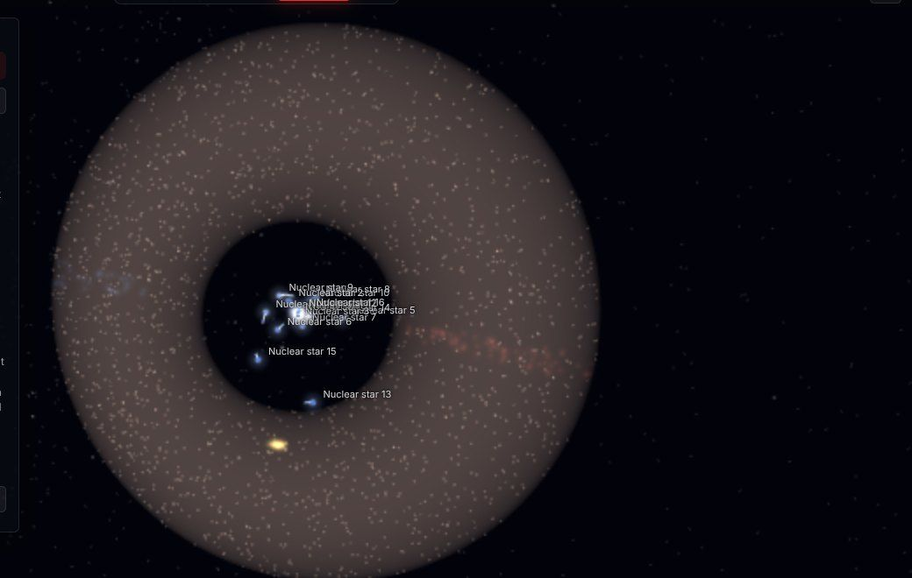
How it was made
Built in three weeks, one feature at a time
I designed and directed Astrarium in November 2026, and built it with Claude Code, Anthropic's AI coding agent. For each feature I set the goal; the agent researched the real catalogues and physics, wrote and tested the code, checked it in a browser, and opened a pull request that I reviewed. Over 22 days that came to 147 commits, about 38,000 lines of TypeScript and 30 real datasets, each rebuilt by its own script.
Get it
Open it now, or take it with you
Launch Astrarium ↗
Works in Chrome, Edge, Firefox and Safari, and on phones.
Download the app ↗
Uses your graphics card and all CPU cores, and works offline.
The full guide (PDF, 17 pages)
What it is, how it was made, what it has and how it is useful.